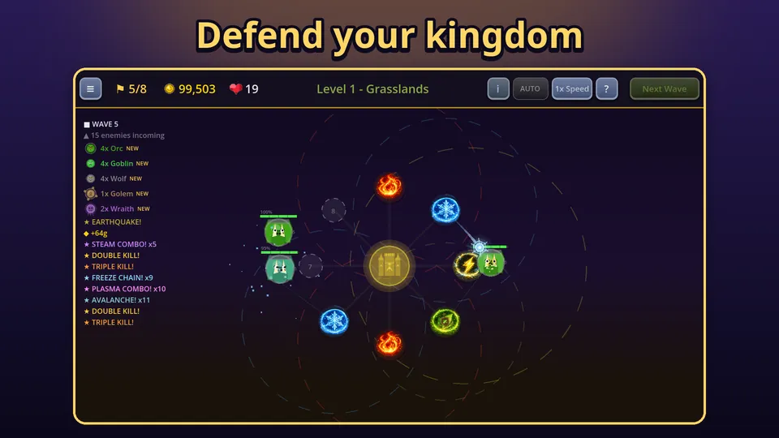
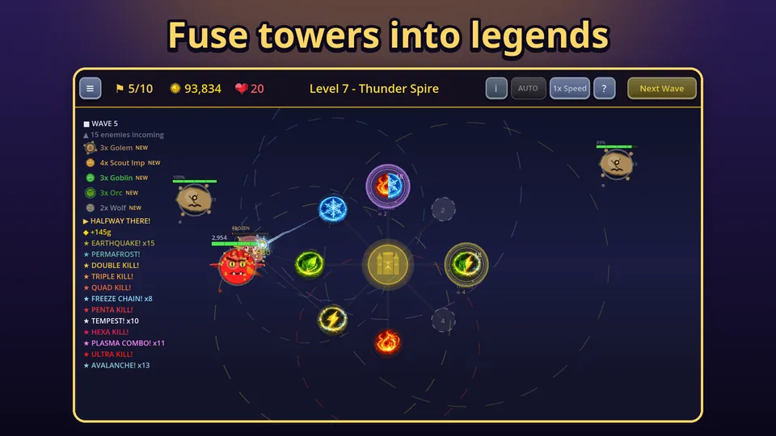

The rule that makes elemental combos in Tower Defense Kingdom work is simple: if towers of different elements hit the same enemy within 1.5 seconds, the game fires a combo. The enemy takes bonus damage and gets a status effect such as burn, freeze, stun or root. Once you know the table below you can plan a defence around it instead of hoping combos happen by accident. If you have not met the game yet, start with what Tower Defense Kingdom is.
The four elements
Each element plays a role. Fire burns, ice slows, lightning chains between nearby enemies, and earth hits an area on impact. On their own they are fine. Together they are the point of the game, because every combo gets its own effect and its own damage multiplier.

The six pair combos
- Steam (fire and ice): 1.5x damage and a slow for 2 seconds.
- Lava (earth and fire): 2x damage and melted armour for 3 seconds. Combo damage ignores armour, so lava is useful against heavily armoured enemies.
- Plasma (fire and lightning): 2.5x damage and a burn for 4 seconds, the biggest pair multiplier.
- Freeze Chain (ice and lightning): 1x damage but the enemy is frozen for 3 seconds. It is a crowd control combo, not a damage one.
- Permafrost (earth and ice): 1.5x damage, root and slow for 4 seconds.
- Earthquake (earth and lightning): 2x damage and a stun for 2 seconds.
Notice that three of the six are mainly about control: Freeze Chain, Permafrost and Earthquake. Those buy time for the rest of your towers, and time is damage.
Triple and four element combos
When three different elements land in the window, you get a stronger triple combo:
- Tempest (fire, ice, lightning): 3.5x damage, burn and freeze.
- Primordial (earth, fire, ice): 3x damage, melted armour and root for 5 seconds.
- Eruption (earth, fire, lightning): 4x damage, burn and stun.
- Avalanche (earth, ice, lightning): 3x damage, freeze, slow and root for 5 seconds.
And when all four elements hit the same enemy in the window you get Cataclysm: 6x damage with burn, freeze, stun and melted armour for 6 seconds. You can see Avalanche and Plasma in the combo log of the screenshot above.
How to trigger combos on purpose
Because the window is 1.5 seconds and tied to a single enemy, what matters is that your towers cover the same stretch of path. On the ring of build slots around the castle, that means towers on neighbouring slots usually see the same enemies. A few habits help:
- Mix elements on neighbouring slots. Two fire towers side by side never make a combo. A fire tower next to an ice tower does.
- Build one of each early. With all four elements in range of each other, any pair or triple can happen.
- Use range upgrades. More range means more towers can hit the same enemy inside the window.
- Do not rely on a single element. Some enemies resist or are immune to certain elements. A defence with all four always has an answer.
If you find your combos are too random, tower fusion is the reliable way to get one. A fusion tower triggers the combo of its two elements on every hit by itself.
Which combo should you aim for?
It depends on what is walking towards your castle. Against a large crowd of weak enemies, Earthquake and Freeze Chain hold them in place so area damage and chains can pile onto them. Against a single tough enemy or a boss, prefer damage: Plasma for pairs, Eruption or Tempest when you have three elements working. Remember that bosses are not meant to be held down for free, so treat control combos as a help, not a plan.
Also watch for enemies that ignore an element. Some are immune to fire, ice, lightning or earth, and a few cannot be slowed or stunned at all. If a combo you rely on needs the element they ignore, pick a different pair. This is another reason to keep all four elements on the ring.

Common mistakes
- Stacking one element. Four fire towers deal decent damage, but you will never see a combo, and one fire immune enemy walks through them.
- Putting all upgrades into one tower. Combos need several elements to hit, so spread the early upgrades.
- Ignoring the log. If you never see a combo name, your towers are not overlapping. Move one.
Combo mastery
Every trigger of a combo adds to a lifetime count for that combo. At 25, 100, 300, 800 and 2000 triggers it gains a mastery level. Each level adds 5 percent to that combo's damage, and levels 3 and 5 each add one second of effect duration. It is a slow, quiet reward for playing the way the game wants you to. Your favourite combos improve without you spending anything.
The relics in the game also push the same direction. There are relics that raise combo damage and stun or freeze chance, and the guide to progressing faster shows how to get them.
Try it
The quickest way to understand combos is to see them. Place a fire, an ice and a lightning tower on neighbouring slots in the first level and watch the log. Play Tower Defense Kingdom on Google Play and try to land your first Tempest. If you want a second opinion on what to build, our beginner tips have a starter plan.
Frequently Asked Questions
How do combos trigger in Tower Defense Kingdom?
When towers of different elements hit the same enemy within 1.5 seconds of each other, the game checks the elements involved and fires the matching combo, adding bonus damage and a status effect to that enemy.
How many combos are there?
There are 11: six pair combos, four triple combos and one four element combo called Cataclysm. The more different elements land on an enemy inside the window, the stronger the combo.
What is combo mastery?
Every time you trigger a combo it counts towards a lifetime total. At 25, 100, 300, 800 and 2000 triggers the combo levels up, adding 5 percent damage per level and extra effect duration at levels 3 and 5.